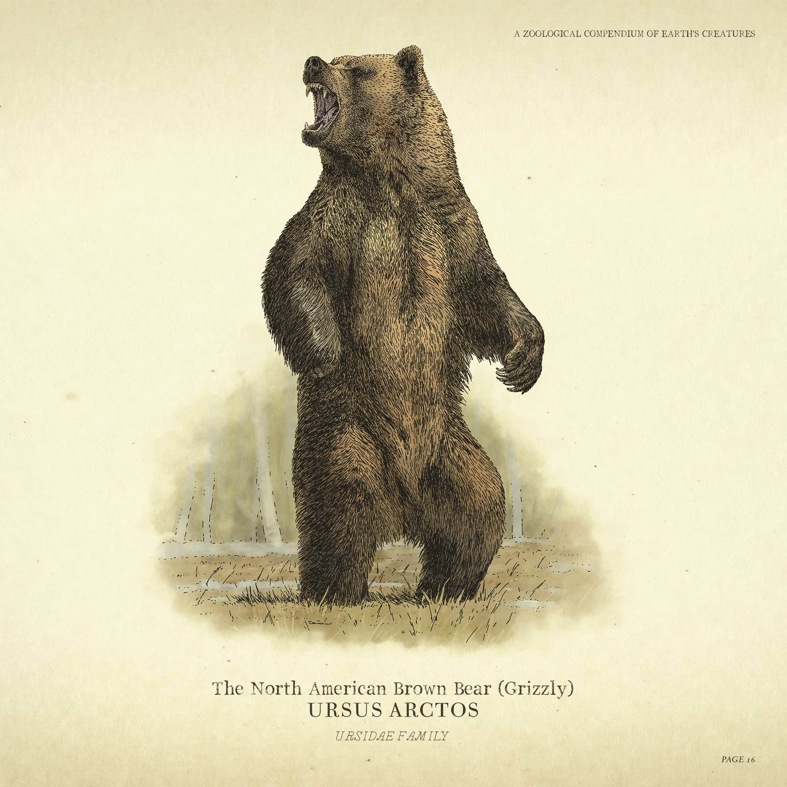
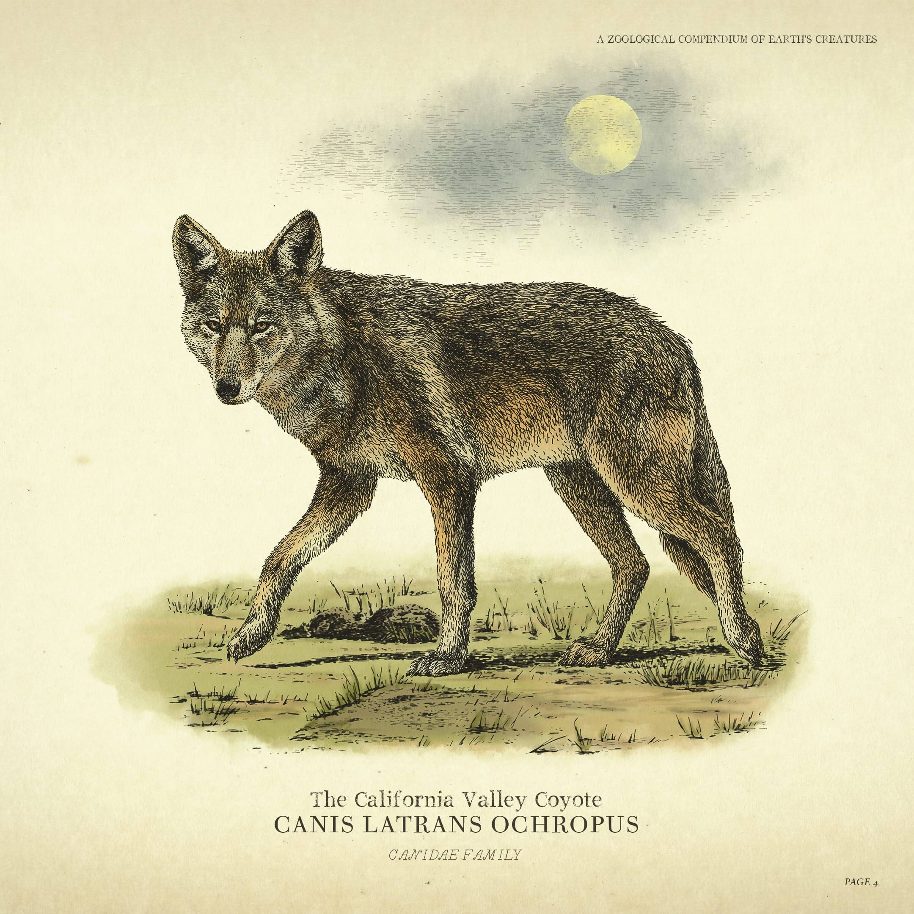
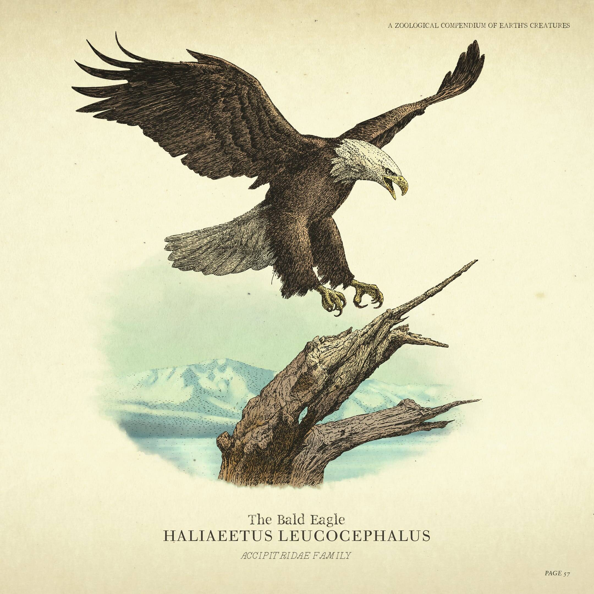
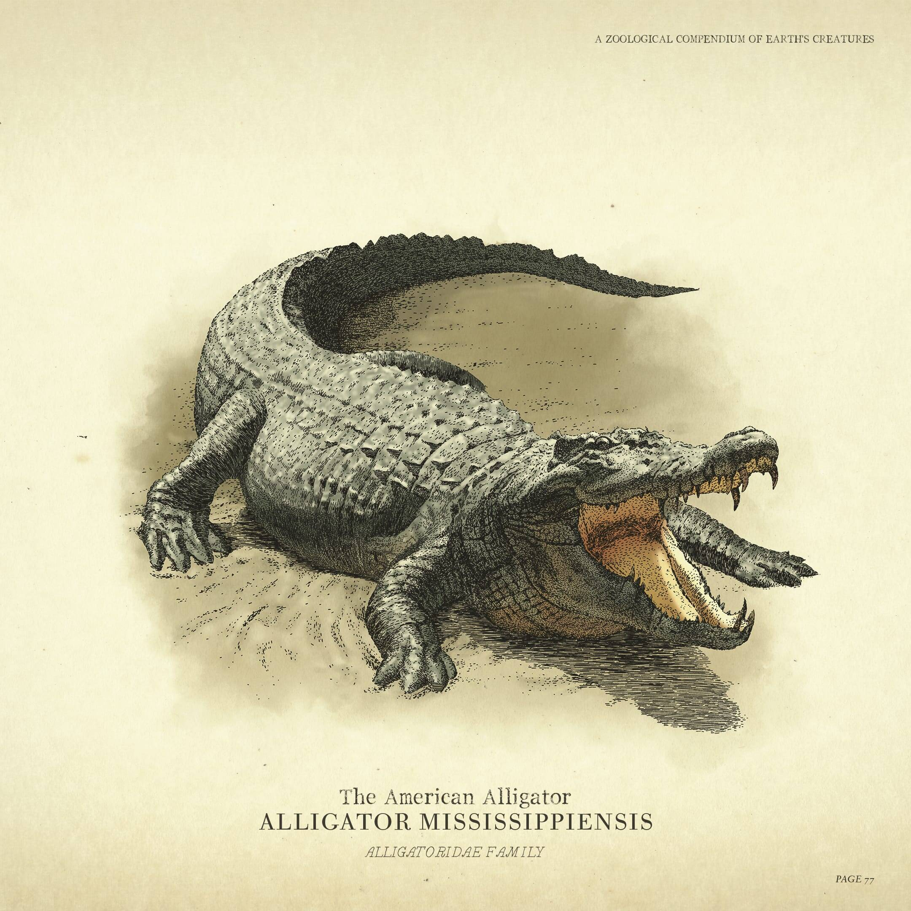
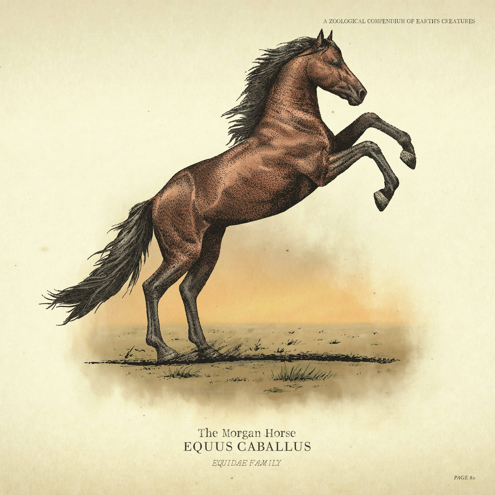
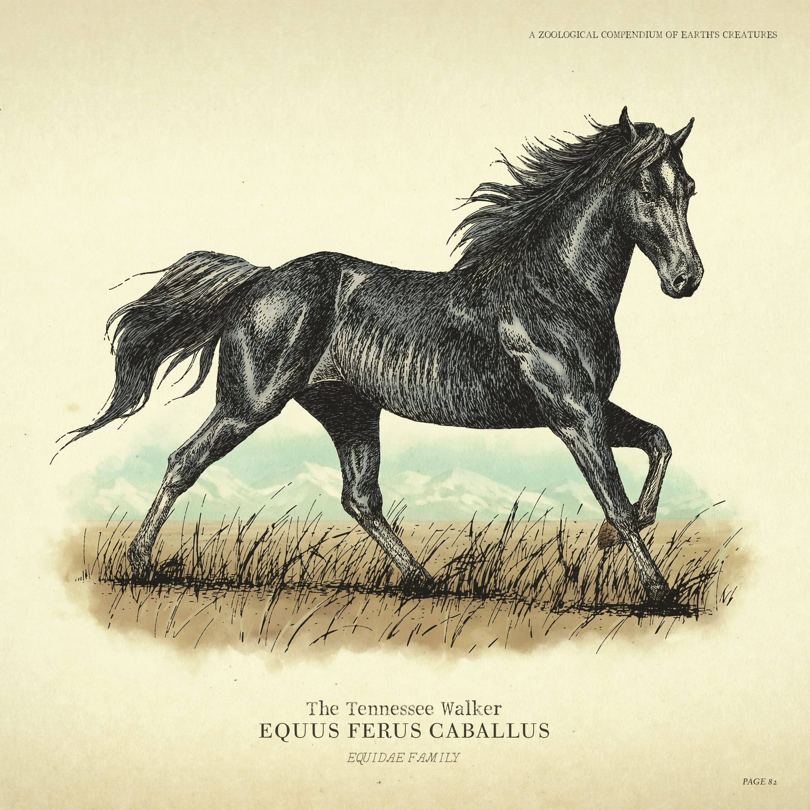
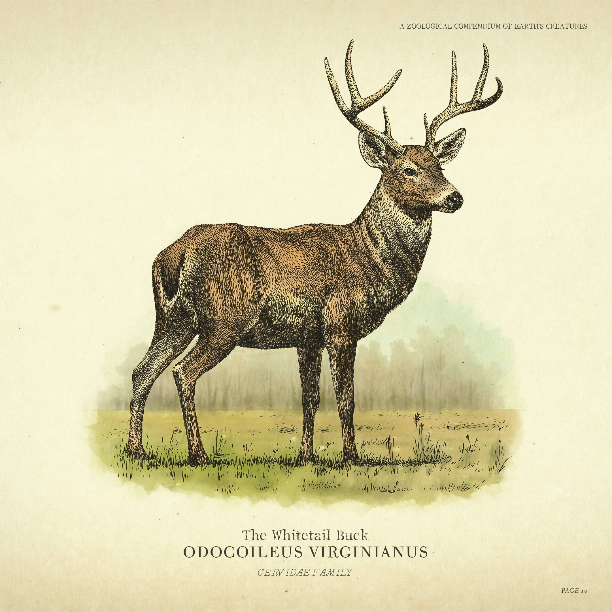
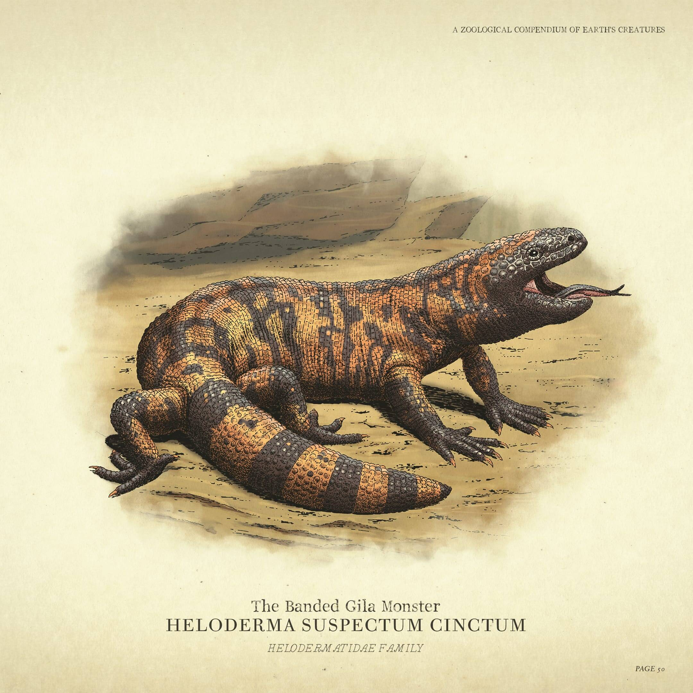
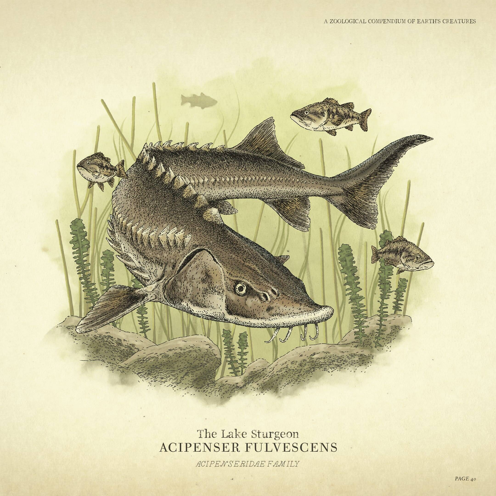
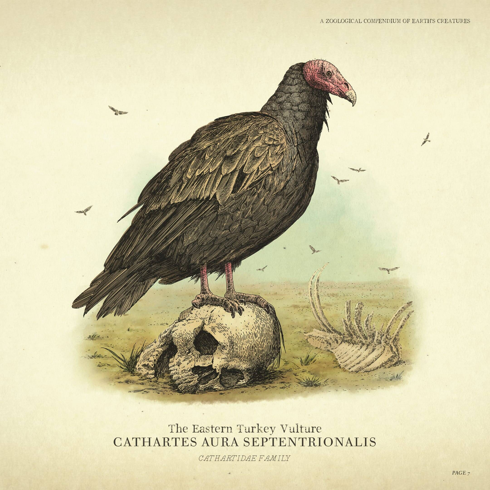

01 / FLORESTAS & FAUNA
Florestas de
Florestas de
Roanoke & Cumberland
Coníferas milenares, névoa densa e refúgio de ursos-negros, alces majestosos e cervos que reagem a cada passo.

América, 1899. A era dos foras da lei está chegando ao fim. O que resta é a lealdade, o sangue e o preço da liberdade.
A HISTÓRIA & O MUNDO SELVAGEM
Entre florestas densas e terras indomadas, cada escolha define quem sobrevive.

Em um território povoado por mais de 200 espécies de animais selvagens, florestas monumentais de coníferas e rios cristalinos, Arthur Morgan e o bando sobrevivem caçando, acampando sob as copas das árvores e cruzando um dos ecossistemas mais vivos já criados.

A GANGUE
 ARTHUR
ARTHUR
O BRAÇO DIREITO
Um experiente fora da lei e caçador habilidoso, mestre em rastrear predadores nas florestas e homem de confiança de Dutch.
ECOSSISTEMAS & VIDA SELVAGEM
Mais de 200 espécies de animais habitam ecossistemas vivos e reativos — desde florestas densas com ursos e alces até picos congelados onde os lobos caçam em alcateia.
Coníferas milenares, névoa densa e refúgio de ursos-negros, alces majestosos e cervos que reagem a cada passo.

Ar rarefeito e nevascas brutais onde apenas o Urso Pardo Lendário, alcateias de lobos e águias-reais dominam o topo.
COMPÊNDIO DA FAUNA & ANIMAIS SELVAGENS

Lendário · Ameaça ExtremaO maior predador terrestre do Oeste. Força colossal capaz de derrubar montarias em segundos.

Predador de AlcateiaCaçam em bandos coordenados e cercam suas presas sob a luz da lua nas noites geladas.

Ave de Rapina SoberanaVisão aguçada e voo majestoso sobre os desfiladeiros mais altos e inacessíveis da fronteira.

Emboscada MortalCamuflado nas águas turvas dos manguezais, aguarda pacientemente o momento exato do ataque.

Montaria IndomávelSímbolo do espírito livre do Oeste. Conhecido pela resistência incansável e coragem em combate.

Velocidade & PrestígioPelagem escura como a noite, porte nobre e aceleração explosiva para fugas arriscadas.

Presa NobreÁgil e atento aos menores ruídos, fornecendo alimento e couro essencial para o acampamento.

Veneno do DesertoRépteis rastejantes adaptados ao calor sufocante e predadores venenosos das rochas áridas.

Ictiofauna dos RiosHabitante veloz das correntes de águas frias e cristalinas, exigindo iscas especiais para a pesca.

Necrófago do DesertoSobrevoa em círculos indicando o fim de uma batalha ou o rastro deixado por foras da lei.
FAUNA & NOTAS DE CAMPO
Alcateias de lobos caçam em bando.
Águias planam nos desfiladeiros.
Ursos defendem seu território.